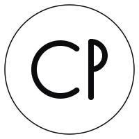

#0C0C0E
Tinta
r 12 · g 12 · b 14
Base de todo. Casi negro pero con un punto frío, para que el dorado no se vea sucio encima.

Sistema visual de Calvin Parra. Versión 01 — propuesta inicial, agosto 2026.
Identidad
Una C y una P entrelazadas dentro de un círculo. Trazo fino, sin relleno: se lee igual en un avatar de 32 px que grabado en una tarjeta.


Logotipo
El nombre en Instrument Serif, con el apellido en cursiva. Debajo, los tres pilares en caja alta muy espaciada.
Símbolo
El ✦ que Calvin ya usa en su bio, redibujado. Sirve de viñeta, separador y favicon.
Color
Tres tonos. El dorado no es decoración: marca solo lo que importa — un acento por pantalla.
r 12 · g 12 · b 14
Base de todo. Casi negro pero con un punto frío, para que el dorado no se vea sucio encima.
r 198 · g 164 · b 98
Acento único. Un dorado apagado, no metálico: lujo por contención, no por brillo.
r 236 · g 231 · b 221
Blanco cálido para el texto. Nunca blanco puro — quema sobre fondo oscuro.
r 142 · g 138 · b 131
Texto secundario y metadatos. Auxiliar, no de marca.
Tipografía
Deliberadamente opuesta a la de JAPI: allá todo es técnico y futurista; aquí es editorial y reposado.
Serif de contraste alto. Solo un peso, regular y cursiva. La cursiva se reserva para el apellido y para acentuar una palabra por bloque.
400 · 400 italic
Sans neutra para párrafos, botones y menús. Pesos 200 a 400 — nunca bold: el énfasis se hace con color, no con grosor.
200 · 300 · 400
Caja alta, 11–12 px, interletrado de 0.2 a 0.32 em. Para antetítulos, botones y pies. Es lo que le da el aire de marca de lujo.
uppercase · letter-spacing 0.2–0.32em
Usos
Tono
Frases que caben en una respiración. Si sobra una palabra, sobra.
Nada de "soluciones innovadoras". Se dice qué se hizo y para quién.
Ni signos de exclamación ni mayúsculas de énfasis. El lujo no levanta la voz.
Archivos
| Archivo | Qué es | Dónde va |
|---|---|---|
| cp-monogram-gold.svg | Monograma dorado | Web, avatar, firma |
| cp-monogram-paper.svg | Monograma claro | Sobre foto oscura |
| cp-monogram-ink.svg | Monograma en tinta | Sobre dorado o papel |
| cp-mark-gold.svg | Destello dorado | Viñeta, favicon |
| cp-mark-paper.svg | Destello claro | Separadores |
| calvin.css | Variables de color y tipografía | Cualquier web del sistema |